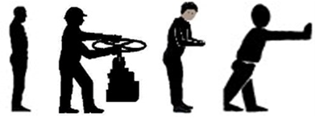
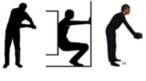
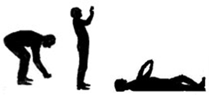
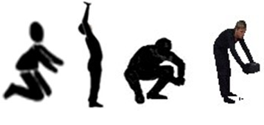

| کل مدت فعالیت فرعی [تا ... دقیقه] و/یا تکرار فعالیت فرعی در هر روز کاری: | تا 1 | > 1 - 5 | > 5 - 10 | > 10 - 20 | > 20 - 30 | > 30 - 45 | > 45 - 60 | > 60 - 100 | > 100 - 150 | > 150 - 210 | > 210 - 270 | > 270 - 360 | > 360 - 480 |
|---|---|---|---|---|---|---|---|---|---|---|---|---|---|
| امتیاز زمان | 1 | 1.5 | 2 | 2.5 | 3 | 3.5 | 4 | 5 | 6 | 7 | 8 | 9 | 10 |
| سطح | نمونههای معمول به عنوان راهنمای طبقهبندی با هدف درک بهتر | نگه داشتن | حرکت | |||||||
|---|---|---|---|---|---|---|---|---|---|---|
| متوسط زمان نگه داشتن [ثانیه] | میانگین دفعات حرکت [عدد] | |||||||||
| 31-45 | 16-30 | 15 ≥ | 5 > | 5-15 | 16-30 | 31-45 | ||||
| کم | نیروهای کم: به طور کلی، نیروهای تمام بدنی با شدت کم وجود ندارند. در صورت لزوم، این فعالیتهای فرعی باید با استفاده از روش KIM-MHO ارزیابی شوند. | - | - | - | - | - | - | - | - | - |
| متوسط | نیروهای متوسط (تا 30 % FmaxM): کار با ابزارهای دستی مانند سنگ فرز، ارهزنجیری کوچک، شمشادزن یا دریل ضربهای با وزن کمتر از 3 کیلوگرم / جابجایی بارها روی ریلهای غلتکی با وزن کمتر از 20 کیلوگرم. | 18 | 12 | 6 | 1.5 | 6 | 12 | 18 | ||
| بالا | نیروهای بالا (تا 50 % FmaxM): کار با ابزارهای سنگین دستی، مانند سنگ فرز، اره زنجیری بزرگ، دریل چکشی 3-8 کیلوگرم / کار با دستگاههای واترجت یا شنپاشها/بیلزنی بارهای < 4 کیلوگرم / جابجایی بارها روی ریلهای غلتکی 20-50 کیلوگرم / پرتاب بارهای < 3 کیلوگرم تا حداکثر 5 متر | 25 | 17 | 8 | 2 | 8 | 17 | 25 | ||
| بسیار بالا | نیروهای بسیار بالا (تا 80 % FmaxM): کار با ابزارهای دستی سنگین، مانند چکشهای بادی (≥ 8 کیلوگرم) / بیلزنی بارهای 4-8 کیلوگرم / جابجایی بارها روی ریلهای غلتکی > 50-100 کیلوگرم / پرتاب بارهای < 3 کیلوگرم تا حداکثر 10 متر یا 3-5 کیلوگرم حداکثر 5 متر | 100 | 100 | 32 | 15 | 4 | 15 | 32 | 100 | 100 |
| قله | نیروهای قله (بیش از 80 % FmaxM): اعمال نیروی ضربهای مانند هنگام کار با دیلمها، پتک / غلتاندن بشکههای سنگین (> 200 کیلوگرم)، حمل و نقل اثاثیه سنگین / بیلزنی بارهای > 8 کیلوگرم / جابجایی بارها روی ریلهای غلتکی > 100 کیلوگرم / پرتاب بارهای < 3 کیلوگرم بیش از 10 متر یا ≥ 3 کیلوگرم بیش از 5 متر | 100 | 100 | 100 | 25 | 6 | 25 | 50 | 100 | 100 |
| تعیین امتیاز تقارن نیرو | امتیاز |
|---|---|
| نیرو با هر دو دست و به صورت متقارن اعمال میشود | 0 |
| نیرو به طور موقت با یک دست و/یا به صورت نامتقارن اعمال میشود: توزیع نامتعادل نیرو بین دو دست | 2 |
| نیرو عمدتاً با یک دست اعمال میشود، توزیع یا جهت نامتعادل نیروهای هر دو دست | 4 |
| تصویر | توضیحات | امتیاز |
|---|---|---|
|  |
- صاف ایستاده تا موقعیتی که تنه کمی به جلو خم شده باشد (< 20 درجه) - بدون پیچش تنه |
0 |
|  |
- ایستاده، تنه بیشتر به جلو خم شده (20-60 درجه) - پیچش و/یا انحراف جانبی تنه گهگاهی قابل تشخیص است - دستها گهگاهی بالای سطح شانه / دور از بدن |
3 |
|  |
- ایستاده، تنه شدیدا به جلو (> 60 درجه) یا عقب خم شده - پیچش و/یا انحراف جانبی تنه مکررا قابل تشخیص - دستها مکرراً بالای سطح شانه / دور از بدن - کار در حالت دراز کشیده با دستها بالای/زیر بدن |
6 |
|  |
- ترکیب خمش شدید به جلو یا عقب و انحراف جانبی/پیچش - پیچش و/یا انحراف جانبی تنه به طور ثابت که قابل تشخیص است - کار در حالت چمباتمه یا زانو زده - دستها دائماً بالای سطح شانه / دور از بدن |
9 |
| تعیین امتیاز شرایط کاری نامطلوب (فقط در صورت کاربرد مشخص کنید) | امتیاز متوسط (IRP) |
|---|---|
| انتقال/اعمال نیرو محدود شده: بارها به سختی قابل چنگش هستند/نیروی بیشتری برای نگه داشتن مورد نیاز است/بدون دستگیره/از دستکش کار استفاده می شود. | 1 |
| انتقال/اعمال نیرو به طور قابل توجهی مختل شده است: بارها تقریباً غیرقابل چنگش هستند/لغزنده، نرم، لبههای تیز/بدون دسته/دسته نامناسب/ از دستکشهای کار استفاده میشود | 2 |
| شرایط محیطی محدود: قرار گرفتن در معرض گرما، سرما و/یا ارتعاش | 1 |
| شرایط محیطی نامطلوب: قرار گرفتن در معرض گرما، سرما و/یا ارتعاش شدید | 2 |
| نیاز به تلاش بیشتر ناشی از شرایط فضایی محدود: تعادل محدود و/یا فضای محدود برای حرکت، مانند ارتفاع بسیار کم یا فضای کاری کمتر از 1.5 متر مربع / کف زمین کمی لغزنده، شیب جزئی (تا 5 درجه)، وجود موانع در فضای کاری. | 1 |
| نیاز به تلاش بیشتر ناشی از شرایط فضایی نامطلوب: تعادل و/یا آزادی حرکت به شدت محدود شده است، به عنوان مثال هنگام کار در فضاهای بسیار تنگ / کف بسیار لغزنده/ناهموار، شیب تندتر (> 5 درجه) | 2 |
| لباسها: بار اضافی ناشی از پوشیدن لباسها و تجهیزات حفاظتی سنگین و محدودکننده (PPE) (بهعنوان مثال لباسهای محافظ در برابر گرما، لباسهای محافظ در برابر مواد شیمیایی، تجهیزات تنفسی سنگین (گروه 3)) | 2 |
| هیچ کدام: هیچ شرایط کاری نامطلوبی وجود ندارد | 0 |
| تعیین امتیاز مربوط به تنوع و تکرار وظایف | امتیاز |
|---|---|
| مطلوب: تنوع زیاد فعالیتهای فیزیکی در طول شیفت کاری به دلیل انجام کارهای مختلف (شامل فعالیتهایی با ماهیت متفاوت). همچنین، در طول شیفت، هیچگونه فعالیت سنگین و طولانیمدت با ماهیت تکراری وجود ندارد. | 0 |
| محدود: تنوع کم در فعالیتهای فیزیکی. همچنین، گاهی ممکن است فعالیتهای سنگین کوتاهمدت با ماهیت تکراری وجود داشته باشد. | 2 |
| نامطلوب: تنوع کم در فعالیتهای فیزیکی. همچنین، در طول شیفت، فعالیتهای سنگین، فشرده و تکراری با ماهیت یکسان انجام میشود که گاهی با افزایش ناگهانی شدت یا مدت کار همراه است. | 4 |
| شرح محاسبه | مقدار |
|---|---|
| امتیاز اعمال نیرو | — |
| امتیاز تقارن نیرو | — |
| امتیاز پوسچر بدن | — |
| امتیاز شرایط کاری نامطلوب | — |
| امتیاز تنوع و تکرار وظایف | — |
| مجموع امتیازهای شاخص | — |
| امتیاز زمان (ضریب) | — |
| امتیاز نهایی فعالیت فرعی | — |
| ریسک | سطح ریسک | شدت بار | الف) احتمال اضافه بار فیزیکی ب) پیامدهای احتمالی برای سلامتی |
اقدامات |
|---|---|---|---|---|
| 1 | کمتر از 20 | پایین |
الف) احتمال اضافه بار فیزیکی کم است. ب) هیچ خطری برای سلامتی پیشبینی نمیشود. |
نیازی نیست. |
| 2 | بین 20 تا کمتر از 50 | کمی افزایش یافته |
الف) احتمال اضافه بار فیزیکی برای افراد کمتحمل وجود دارد. ب) خستگی و اختلال سازگاری با شدت کم که در زمان فراغت جبران میشود. |
برای افراد کم تحمل، بازطراحی محل کار و سایر اقدامات پیشگیرانه ممکن است مفید باشد. |
| 3 | بین 50 تا کمتر از 100 | بهطور چشمگیری افزایش یافته |
الف) اضافه بار فیزیکی حتی برای افراد با تحمل متوسط نیز ممکن است رخ دهد. ب) اختلالات (معمولاً همراه با درد) که ممکن است شامل اختلال عملکرد اندامها باشد، در اکثر موارد موقتی هستند. |
بازطراحی و اقدامات پیشگیرانه باید مورد بررسی قرار گیرند. |
| 4 | برابر یا بیشتر از 100 | بالا |
الف) احتمال اضافه بار فیزیکی بالاست. ب) آسیبهای ساختاری قابل توجه با عواقب بیماریزا و اختلال عملکردی شدید. |
بازطراحی الزامی است و سایر اقدامات پیشگیرانه نیز باید مدنظر قرار گیرند. |